Apresento à seguir uma proposta de leitura para uma pessoa que deseja seguir a trilha programação > liderança > arquitetura.
Introdução
1: O mercado de trabalho não busca leitores de livros, ele busca resolvedores de problema os quais resolvem mais rápido e com mais qualidade.
Sendo assim, não importa se o conhecimento está na sua cabeça ou não. O que importa é você saber encontrar a informação necessária para resolver o problema, resolvê-lo e rápido.
Dessa forma, não preocupe-se em ler todas as palavras dos livros e aprender tudo na primeira leitura. O conhecimento é feito em camadas, pela repetição.
Aliás, a leitura de livros não é obrigatório para ser um bom profissional. Mas, se você quer se diferenciar e ganhar velocidade, é inevitável.
O objetivo aqui é estudar para resolver problema. Se você quer estudar para passar em prova, o método é outro.
2: O dinheiro é um recurso fundamental por várias razões impostas na sociedade em que vivemos atualmente, principalmente pela liberdade que ele proporciona.
Para ganhar mais dinheiro é necessário aumentar o seu valor percebido. Ele pode ser aumentado por suas experiências e conhecimentos.
Para aumentar experiências, considere trabalhar em consultoria que é o tipo de empresa possuidora de funcionários em várias empresas de variados segmentos. Busque trabalhar em várias.
Para aumentar conhecimentos, considere a leitura dos livros abaixo e a prática dos seus exercícios.
3: Conhecimento posterga a dor. Se está difícil, você está no caminho certo. Persista. Vá longe.
4: Preocupe-se com a velocidade. Criar hábito do estudo diário e pouco costuma ser melhor do que breve e muito.
5: Quanto mais distante você for, maior tende a ser o seu valor percebido porque poucos conseguem criar esse hábito e, por consequência, ter remuneração de poucos.
Caso contrário, seu valor percebido não aumentará no tempo e, por consequência, sua remuneração também não. Talvez, o desemprego aparecerá.
É assim que o mercado funciona e ele não tem pena de você. No fim, o objetivo sempre será o lucro. Afinal, é ele que habilita a continuidade de negócio e geração de emprego.
Programação
|
Ultrapassar a barreira da prática e aprendizado de algoritmos é muito difícil. Tentar realizar e aprender os exercícios desse livro determinará se você realmente quer ser uma pessoa programadora. Senão quiser, nenhum problema. Melhor sofrer no início do que sofrer em ambiente de trabalho com prazos e expectativas. Esse livro possui a solução dos exercícios em várias linguagens. Eu sugiro Python e o racional dessa escolha está aqui. |
|
Continuar utilizando Python agora para conhecer e praticar conceitos fundamentais de qualquer linguagem de programação, tais como: Estrutura de dados, orientação à objetos e concorrência. Esse livro tem uma versão online. Lembre-se que existe um motivo para uso de Python nesse momento. |
Após isso, busque uma abordagem inicial sobre programação web. A playlist Aprendendo a Programar do Rodrigo Branas é uma ótima alternativa.
Ao escrever e testar os códigos dos recursos acima você poderá esbarrar em problemas por falta de conhecimento, para isso é importante o conhecimento dos cinco livros abaixo.
Esses livros abaixo compõem a base que, infelizmente, muitos programadores não possuem. É o tipo de conhecimento que não muda com o tempo. Lê-los irá te trazer velocidade ao estudar tecnologias modernas e aumentar o seu valor percebido (ajuda ao negociar promoção ou aumento salarial).
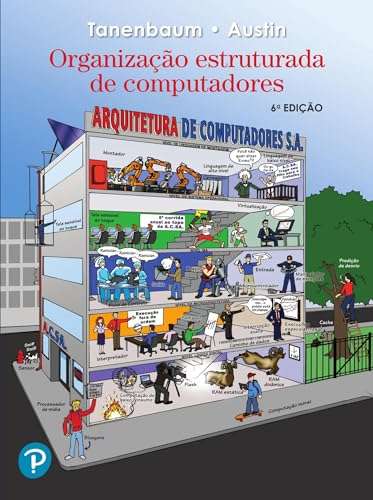 |
Como o computador funciona? Essa é uma pergunta que, na profundidade por vezes necessária, raros programadores sabem responder. A ausência desse conhecimento gera impedimentos técnicos e lentidão em algumas entregas. Não são frequentes, mas ocorrem. |
|
Como um computador conversa com outro? Atualmente, todo software, salvo raros casos de uso, é projetado para se comunicar com outro que está em outro computador gerando dependência de rede. Não conhecer os fundamentos dessa comunicação atualmente seria como viajar para outro país sem conhecer o idioma. Se prefere conteúdo lúdico, Head First Networking. |
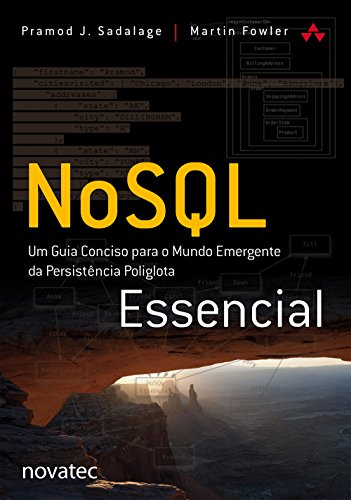 |
É um guia que explora os fundamentos, conceitos e diferentes tipos de bancos de dados NoSQL, oferecendo insights valiosos e orientações práticas para ajudar os profissionais de TI a entender, escolher e utilizar adequadamente soluções NoSQL em seus projetos. |
Aqui, você conhece os componentes fundamentais de uma linguagem de programação e os conhecimentos fundamentais de Computador, Sistema Operacional, Redes e Banco de Dados.
Agora o objetivo é saber criar código com alta qualidade e os aspectos comportamentais de um bom programador.
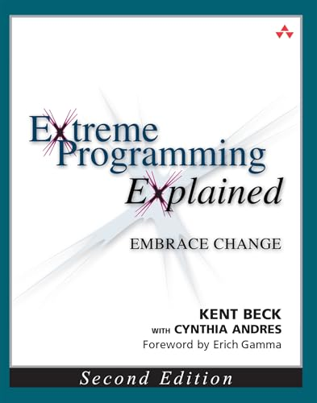 |
É um guia fundamental que introduz os princípios e práticas do Extreme Programming (XP), destacando a importância da comunicação, feedback contínuo e colaboração para o desenvolvimento de software de alta qualidade e entrega de valor ao cliente. |
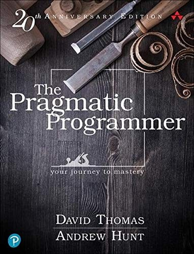 |
Oferece conselhos práticos para programadores, abordando desde técnicas de codificação até habilidades interpessoais. Os autores destacam a importância da eficiência, automação e melhoria contínua na prática de desenvolvimento de software. |
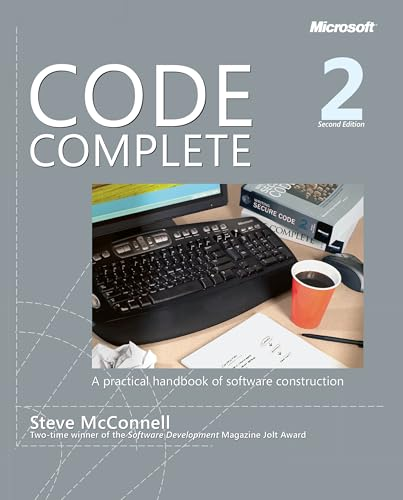 |
É uma obra essencial para programadores, fornecendo orientações detalhadas sobre todas as fases do desenvolvimento de software, desde a escrita de código até o gerenciamento de projetos de programação. |
|
É um guia prático que oferece insights valiosos sobre desenvolvimento de software, abordando desde habilidades técnicas essenciais até práticas de colaboração e desenvolvimento profissional. |
Avançando um pouco mais, você poderá ser escalado para, ou começar a ter a consciência de, definir o desenho de um componente (SPA, API, batch etc) antes da codificação.
Isso caracteriza que você está avançando para se tornar sênior. Para isso, abaixo, livros que ajudam nisso.
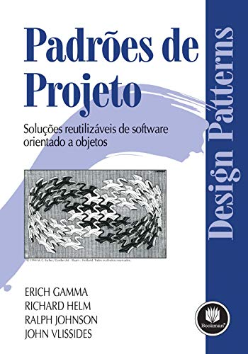 |
É uma referência clássica que explora padrões de design fundamentais para o desenvolvimento de software. Se houver dificuldade em entender, opte primeiro ler o livro Mergulho nos Padrões de Projeto ou Head First Design Patterns. |
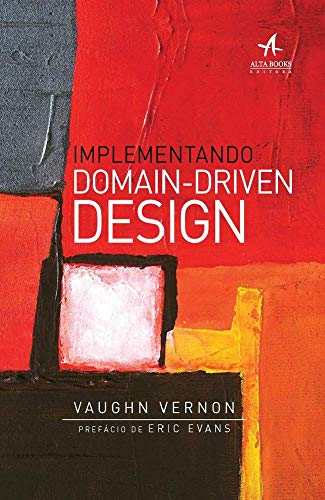 |
É um livro prático que oferece ideias valiosas e orientações detalhadas para implementar o Design Orientado a Domínio (DDD) em projetos de software, promovendo uma abordagem centrada no domínio para desenvolvimento de sistemas mais eficazes e sustentáveis. Útil por ter mais exemplos. O clássico, porém difícil de digerir, é este. |
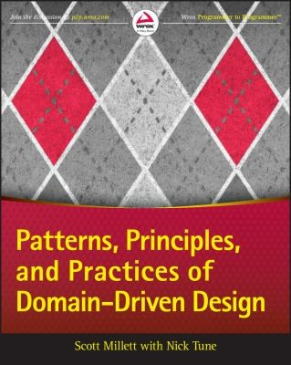 |
É um guia que explora os padrões, princípios e práticas essenciais para aplicar o Design Orientado a Domínio (DDD) de forma eficaz em projetos de software, oferecendo insights valiosos e exemplos práticos. A melhor leitura que eu tive sobre o assunto. Esse é um tema por vezes subjetivo e, por isso, existem outros livros. |
|
É um guia que explora padrões e melhores práticas para projetar e implementar arquiteturas de software escaláveis e flexíveis, oferecendo insights valiosos e orientações práticas para programadores. |
Até aqui, entendo que você estará bem coberto de conteúdo que continua útil com o tempo para produzir código com qualidade.
Caso queria, em função das oportunidades que aparecem no mercado de trabalho, aprofundar em uma linguagem específica, considere a consulta da documentação oficial.
Se a leitura for difícil, adicione em paralelo um curso na Udemy ou playlist no Youtube. Se de fato usará a linguagem diariamente, a leitura de livros sobre ela é interessante para capturar pontos de vista e opiniões.
Liderança
Eu acredito que para ser um bom líder é melhor quando você foi um bom programador. Em alguns casos, você precisará ser líder e programador simultaneamente. Esse é um motivo.
Outro motivo é para inspirar e ser referência para os programadores do seu time. Afinal, sem experiência, sem credibilidade e, por consequência, sem capacidade de inspirar.
Considerando, então, que você tem experiência e conhecimento de uma boa pessoa programadora, agora o desafio pela frente é se relacionar com pessoas, não somente o computador.
Nessa posição, você estará mais próximo do PM, PO, SM e/ou, até, CTO em eventuais projetos ou casos críticos. Por vezes, necessário realizar apresentações, explicações e argumentações.
Essa nova relação exigirá conhecer os processos que executam ao redor da atividade de programação, bem como o que é necessário existir além do componente que os programadores do seu time entregam.
Em outras palavras, conhecer os processos que compõem a engenharia de software moderna, afinal agora você é o principal responsável pela entrega.
Sabendo disso, vamos às leituras.
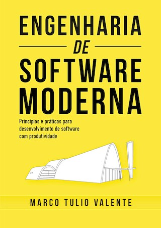 |
É um guia abrangente e prático que explora os princípios, práticas e ferramentas atuais no desenvolvimento de software. Será uma boa primeira passada alto nível sobre o processo para receber requisito até entregar software. Existe o livro digital. Existem outras abordagens, tais como Pressman e Sommerville. |
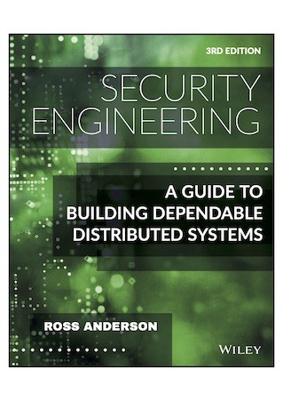 |
Oferece uma visão dos princípios e práticas de segurança da informação, cobrindo desde conceitos básicos até tópicos avançados em engenharia de segurança. Se precisar de uma abordagem diferente, consulte o Manual do Hacker. |
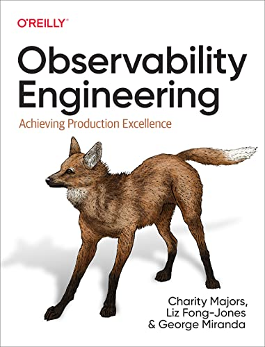 |
É um guia prático que explora a importância da observabilidade em sistemas distribuídos. Cobrindo ferramentas-chave e práticas de implementação, o livro capacita os engenheiros a criar sistemas resilientes e de alto desempenho. |
Arquitetura
Na posição de pessoa arquiteta você se encontra, na maioria dos casos, fora do time de engenharia de software. Obtém os objetivos estratégicos da empresa ou contribui / influencia na criação dos mesmos.
Pode ajudar a gestão de portfólio e/ou produtos da empresa para desdobrar esse objetivos em programas e projetos a fim de criar o planejamento estratégico da empresa.
Para isso, identifica o to be esperado, confronta com o as is mapeado da empresa, identifica impactos em alto nível e, com essas informações, contribui na criação de roadmaps.
Na realização dos projetos, busca identificar os impactos em baixo nível e desenhar o to be em nível de componentes das aplicações de acordo com as políticas de arquitetura previamente definidas e a direção tecnológica que a empresa está apontada.
Para realizar essas atividades é necessário definir e manter o as is da empresa no que diz respeito ao negócio, aplicações e infraestrutura. Não é uma tarefa fácil, mas essencial para o sucesso do trabalho.
Para isso, é importante criar o repositório de arquitetura, definir uma estrutura de dados para armazenamento das informações e processos de trabalho.
Um forte candidato para a estrutura de dados é o Archimate. Um forte candidato para processos de trabalho é o TOGAF ADM.
Diante dessa introdução, vamos à proposta de leitura.
|
É uma obra abrangente que explora os princípios, práticas e padrões fundamentais da arquitetura de software, oferecendo insights valiosos e orientações práticas para arquitetos de software e desenvolvedores. Se prefere conteúdo lúdico, Head First Software Architecture. |
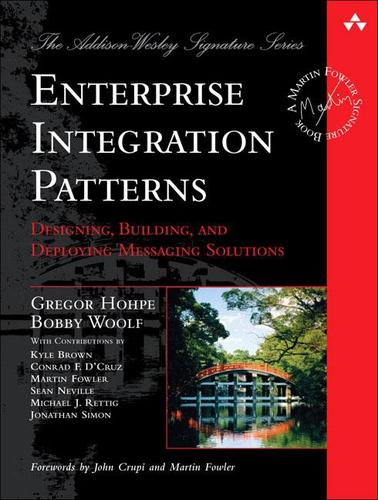 |
É uma referência essencial que explora padrões de integração de sistemas empresariais, oferecendo soluções para desafios comuns na integração de aplicativos, mensageria e comunicação entre sistemas, proporcionando insights valiosos para arquitetos de integração e desenvolvedores. |
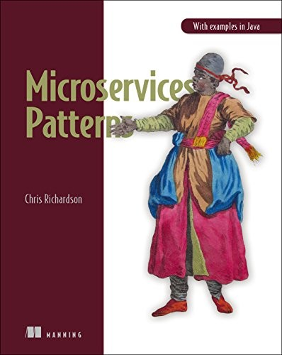 |
É um guia prático que explora os padrões e práticas para projetar, desenvolver e implantar arquiteturas de microservices escaláveis e resilientes, oferecendo insights valiosos e exemplos práticos para arquitetos e desenvolvedores que adotam essa abordagem. |
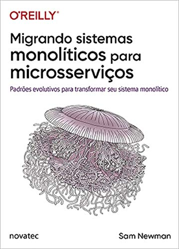 |
É um guia prático que explora estratégias, técnicas e desafios ao migrar de arquiteturas monolíticas para microservices, oferecendo insights valiosos e orientações detalhadas para equipes de desenvolvimento que buscam modernizar suas aplicações de software. |
|
É um guia essencial que oferece estratégias, técnicas e práticas para lidar com código legado de forma eficaz, promovendo a compreensão, manutenção e refatoração de sistemas legados com sucesso. |
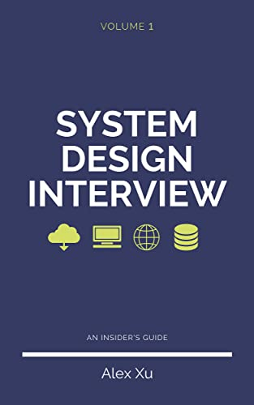 |
É um recurso valioso que oferece orientações, técnicas e práticas para se preparar para entrevistas de design de sistemas, explorando conceitos-chave, padrões de design e estratégias para resolver problemas de escalabilidade, disponibilidade e desempenho em sistemas distribuídos. Volume 2. |
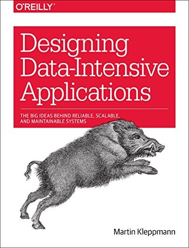 |
É uma obra essencial que explora os princípios, técnicas e desafios de design para desenvolver aplicações intensivas em dados, oferecendo insights valiosos e orientações práticas para arquitetos e desenvolvedores que trabalham com sistemas de dados distribuídos e escaláveis. |
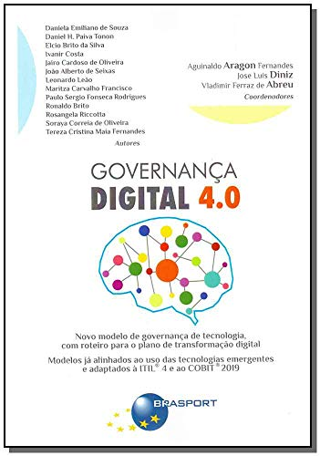 |
É um guia que explora as estratégias, práticas e tecnologias emergentes para aprimorar a governança em um contexto digital, oferecendo insights valiosos para líderes de negócios e profissionais de TI que buscam maximizar o valor dos investimentos digitais e garantir o sucesso organizacional. |
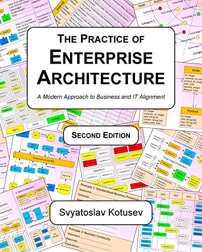 |
É um recurso essencial que oferece uma abordagem moderna para alinhar os objetivos de negócio com a TI, explorando estratégias, frameworks e práticas para desenvolver e implementar uma arquitetura empresarial eficaz e adaptável. |